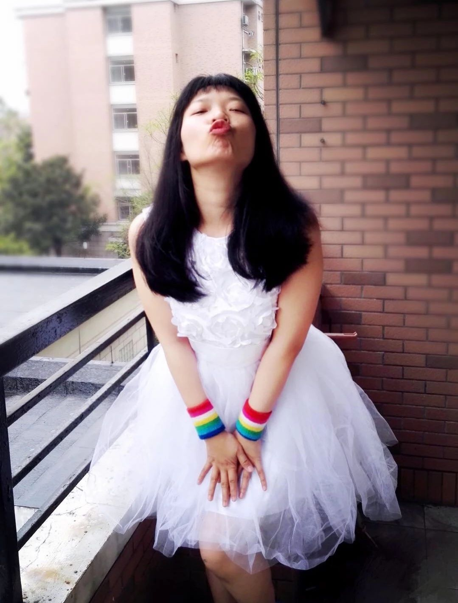

妇女节茶话会 | 女性的独立和就业性别歧视
“女人要求平等要先独立”，那么独立路上的拦路虎怎么办？
虽然已经到了春暖花开的三月，大家也已经习惯幸福地（不）沉浸在工作和学习中了，但是想到春节回家被催婚、催生的噩梦，还是会心有余悸，“仿佛就在昨天”。
不久前，我仍在和朋友吐槽被催婚是多么不公平，她则认为如果我经济独立，足够有钱，这些破事就迎刃而解啦。
这句话是不是很熟悉？
比如，微博上一个女孩被家人逼婚到差点被相亲男强奸时，部分网友的第一反应也说：如果你经济独立就不用受家里控制（？）（那时候网友并不知道她已经经济独立啦）。
比如，《天空之城》里的主妇违背丈夫的意愿后，被剪掉银行卡，弹幕说：女人不出去工作在家里自然没有地位。
比如马克思还是毛泽东先说的：妇女只有参与社会生产才能得到解放……TA们认为——女人，你要自己赚到够多的钱，才能来谈自由、谈平等、谈解放。
我们暂且不批判——把女人遇到的不公平都归结为女性自己“不赚钱”或者“赚钱不够多”的个人责任上，是不是在回避社会结构，是不是有一点儿谴责受害者的逻辑，我们只想问问：
这个归纳真的可以解决女性在家庭中的所有不平等问题吗？
即便我们假设：如果参与社会劳动者/赚钱真的是女性获得解放的唯一途径，是女性要求任何平等、自由的前提，那么女性就业真的能够帮助女性走上“独立自强”的康庄大道吗？如果有人在女性提出不平等的时候，让女性先工作赚钱再来谈权益，却对女性就业道路上的拦路虎——消除就业性别歧视闭口不谈、无所作为，那么TA不是真的在要求/激励女性经济独立，而是找个借口让女人对自己受到的不公平闭嘴而已。
所以，既然咱们不是这么虚伪的人，在这个妇女节，就让我们来聊一聊就业性别歧视吧。

🔺嘉宾介绍：猪西西，女权行动派，性别政策研究僧
茶话会时间：3月10号（周日）下午13:00-15:30
地点：杭州同志中心（公众号回复“幸福在哪里”查看）
说明：本次茶话会为女性专场噢
你有没有遇到或听说这样的事：学校通知的一些企业或政府单位招聘信息，却仅限男性；工作单位里男性的领导或者同事经常对女同事的外表评头论足；女性员工要多做一些端茶倒水的行政工作......你遇到或者听到这些事的时候，周围的人却跟你说这些都很“正常”，不知道TA们口中的“正常”代表“普遍”的无奈，还是代表TA们自己的认同，弄会不会感到不舒服？
或者，你是不是经常听到这样的话：
“有些工作就是不适合女性呀？”；
“男女搭配干活不累，所以要平衡一下男女比例？”；
“市场经济不是歧视女性，是天然地排斥女性“
......
乍一听仿佛振振有词，但是总觉得怪怪的，又一时不知道如何反驳？
当有一天，你投的求职简历突然就被筛掉了，打电话去询问时对方说更愿意考虑男性。你很不甘心，又不知道除了“拿脚投票”再换一家投有什么别的办法？如果你的朋友突然向你倾诉，你发现她遇到了职场性骚扰，你又该如何帮助她？
那么，面对就业性别歧视的问题，我们怎么看，怎么说，怎么做？
如果你对这些问题有许多的问题疑惑，或者有相关的经验与故事想要与我们分享，请欢迎来我们的茶话会！
在这次茶话会你将会了解到：
1. 社会性别和歧视——如何辨别就业歧视
2. 性别歧视相关政策——反对就业性别歧视的法律武器政策依据
3. 维护女性就业权益小 tips ——遇到就业歧视怎么办
4. 在反就业性别歧视的路上，女权行动派做了什么
5. 软饮、茶水和小点心
茶话会时间：3月10号（周日）下午13:00-15:30
地点：杭州同志中心（公众号回复“幸福在哪里”查看）
说明：本次茶话会为女性专场噢